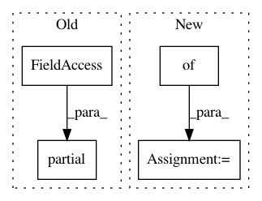

3c44c0d3e4b5b764ab993bca11a1c58f1e43ed2c,python/ray/serve/tests/test_long_poll.py,,test_async_client,#Any#,83
Before Change
client = LongPollerAsyncClient(
host, {
"key_1": functools.partial(callback, key="key_1"),
"key_2": functools.partial(callback, key="key_2")
})
After Change
pass
with pytest.raises(ValueError):
client = LongPollAsyncClient(host, {"key": callback})
callback_results = dict()
async def key_1_callback(result):
In pattern: SUPERPATTERN
Frequency: 3
Non-data size: 4
Instances
Project Name: ray-project/ray
Commit Name: 3c44c0d3e4b5b764ab993bca11a1c58f1e43ed2c
Time: 2020-12-10
Author: ed.nmi.oakes@gmail.com
File Name: python/ray/serve/tests/test_long_poll.py
Class Name:
Method Name: test_async_client
Project Name: dpressel/mead-baseline
Commit Name: 7e2784881db5a8a56961ba7bbde7b1ff1843f8d9
Time: 2018-05-08
Author: blester125@users.noreply.github.com
File Name: python/mead/mime_type.py
Class Name:
Method Name:
Project Name: tensorflow/models
Commit Name: a1337e01db4e3a54c48d2fbd6614c772bdf0f4c5
Time: 2018-11-30
Author: lzc@google.com
File Name: research/object_detection/builders/model_builder.py
Class Name:
Method Name: _build_ssd_model